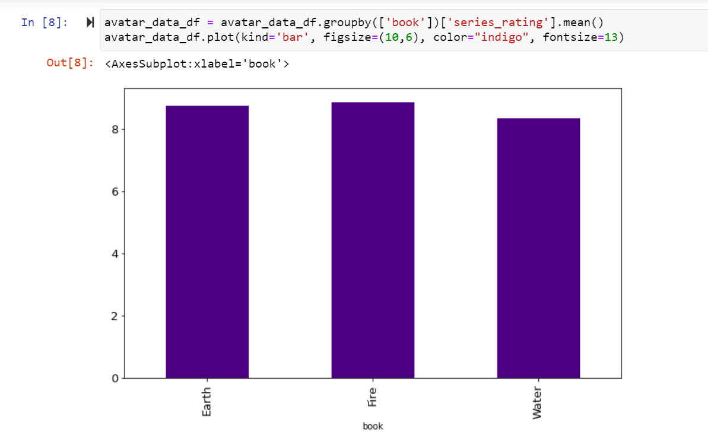

The TV show I watched most recently was Avatar the Last Airbender. Normally I hate animated shows/movies, but I will admit it was entertaining. My argument is that Sokka is the most underrated charachter. The three main characters are Sokka, Katara, and Aang. Katara and Sokka discover Aang, who has been missing for 100 years. He is the avatar and must adventure across the world to master bending so that he can defeat the fire lord in the war.
Sokka is a chracter throughout all 3 seasons and I always felt he was overlooked because Aang and Katara have an unspoken romance. Sokka is the sarastic one in the bunch and does not have the ability to bend like Aang and Katara. Instead, he is a strategist and humorous character.
Based off of this analysis of Avatar, we can see that Sokka has more dialogue in Seasons 2 & 3 than Aang, who is supposedly the most important character in the show. This is interesting because Aang is doing his bending training and has a lot of episodes that focus on just that.
Another interesting thing about the series is the romances. Aang and Katara have an unspoken romance that the show hones in on. Sokka dates 2 girls throughout the show and no one really seems to care that one of them dies. However, when Aang almost dies, Katara makes a huge deal about it. It was honestly pretty sad because this girl sacrifices herself to save everyone else. Sokka blames himself for not being able to protect everyone and carries guilt.
Overall, Sokka is a great character who has a lot of screentime and dialogue, but I think his feelings and personality are set aside. Aang and Katara are also important characters, but their romance overshadows Sokka's personality.
